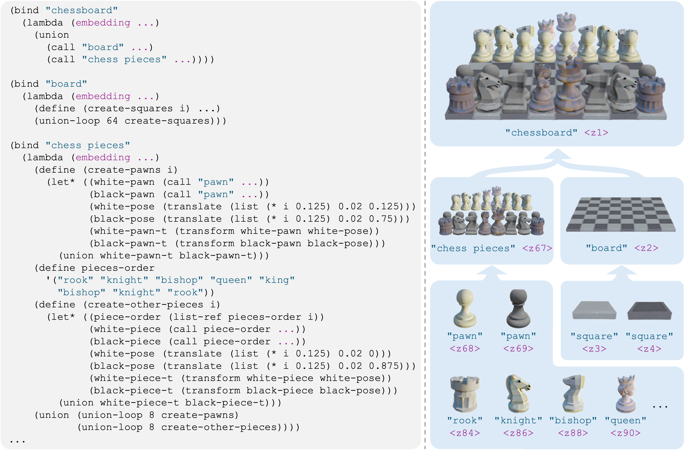

Programs, Words, and Embeddings
We introduce the Scene Language, a visual scene representation that concisely and precisely describes the structure, semantics, and identity of visual scenes. It represents a scene with three key components: a program that specifies the hierarchical and relational structure of entities in the scene, words in natural language that summarize the semantic class of each entity, and embeddings that capture the visual identity of each entity. This representation can be inferred from pre-trained language models via a training-free inference technique, given text or image inputs. The resulting scene can be rendered into images using traditional, neural, or hybrid graphics renderers. Together, this forms an automated system for high-quality 3D and 4D scene generation. Compared with existing representations like scene graphs, our proposed Scene Language generates complex scenes with higher fidelity, while explicitly modeling the scene structures to enable precise control and editing.
In the representation, a program declares a set of functions. Each function defines a semantic class of parts or objects, with natural language words as the class name, by defining a mapping from neural embeddings capturing geometry and appearance details to class instances. The function body explicitly describes the computation process of how simpler semantic components are spatially transformed and composed into complex scenes.
Below shows various applications of the proposed pipeline. Each video is a 360-degree scene rendering of the output scene. Clicking "Show Response" buttons reveals raw language model response, which contains the program and word components of the full representation.
This section shows results on text-conditioned 3D scene generation (left column) and editing-instruction-following (right column), with text inputs shown below the corresponding output renderings. Our representation provides an intuitive interface for controllable scene generation and editing, as 1) program function names correspond to words in natural language, offering interpretable semantic meanings, and 2) program structure reflects scene structure, enabling significant scene changes through simple, one-line edits while preserving overall structure.
A chessboard at game start
Make a starting chess move
A fractal tree
Make branching structure to be trinary and 3D
A 8-layer 3-color Jenga set at game start
Remove 2 blocks from second top layer and the tower should not fall
Moai in Ahu Akivi, with slight variations
Make every two statues face to each other
René Magritte The Son of Man
Move the apple to left
Bramante Staircase, Vatican Museums
Shrink staircase radius by 80%
Paul Klee Castle and Sun
Change all castles to be the middle one
The proposed representation captures the structure not only for static, but also for dynamic scenes, and can be applied for synthesizing 4D scenes conditioned on text inputs. Comparisons with a 4D synthesis method, 4D-fy [8], are shown below. Different from 4D-fy which uses and implicit 4D representation, ours explicitly represents the temporal correspondence of entities—Click the button below for tracking visualizations.
Ours
4D-fy
A toy wind turbine
Ours
4D-fy
Carousel with a small canopy
Ours
4D-fy
Solar system model
The same representation can be rendered with different renderers, showing the versatility of the proposed representation. Different renderers produce renderings that adhere to the same representation and therefore are visually aligned, while each exhibits a different imaging style. The following shows text-conditioned 3D generation results, with the renderer names and input text prompts shown below corresponding renderings.
Minecraft
Mitsuba
A detailed model of a tennis court
Minecraft
Mitsuba
An interior scene of a university lecture hall
Mitsuba
Gaussians
A scene inspired by The Angelus, Millet
Mitsuba
Gaussians
The Goldfish by Henri Matisse
Mitsuba
Gaussians
A still life painting from Giorgio Morandi
Mitsuba
Gaussians
A monitor, a keyboard, a mouse, a metal photo frame, and a plant on a wooden desk top
Mitsuba
Gaussians
Lincoln Memorial
Input image
In the representation, a program consists of a set of semantic-aware functions identified by words. A function maps embeddings to entities in the scene. To automatically infer the representation from text or image inputs, we convert the Scene Language grammar into Python and prompt Claude 3.5 Sonnet [1] to generate the non-neural components. Neural embeddings reside in the CLIP text embedding space [2,3] and are obtained from texts via the CLIP text encoder or inverted from images with a pre-trained text-to-image model [4,5]. Afterward, a program interpreter executes the program and computes a data object for the scene, and a graphics renderer renders the data object into an image.
The proposed representation applies to image-prompted editing tasks such as style transfer. Edits can target partial or full scenes respectively, by updating embeddings for corresponding entites.
We evaluate our method on text-conditioned 3D generation tasks via a user study across 9 scenes shown below. We compare with two baseline methods: GraphDreamer [6], which uses scene graphs for intermediate representation, and MVDream [7], which directly generates scenes from text inputs. Input text prompts are show below output renderings. Our method achieves more favorable prompt alignment than the baselines and has a clear advantage in counting accuracy.

MVDream
GraphDreamer
Ours
A 8-layer shelf

MVDream
GraphDreamer
Ours
A 5x5 grid of white and black chess pieces on a square board

MVDream
GraphDreamer
Ours
7 different sized Russian nesting dolls lined up

MVDream
GraphDreamer
Ours
A nursery with 7x7 of potted plants

MVDream
GraphDreamer
Ours
A room with four desks, each with one computer monitor on it

MVDream
GraphDreamer
Ours
6 bottles of water arranged in a circle around a small potted plant

MVDream
GraphDreamer
Ours
A 8-layer 3-color Jenga set at game start

MVDream
GraphDreamer
Ours
15 coke cans stacking in a pyramid

MVDream
GraphDreamer
Ours
Three cokes in a close circle
- Anthropic. The Claude 3 model family: Opus, Sonnet, Haiku, 2024.
- Gadre, S. Y., Ilharco, G., Fang, A., Hayase, J., Smyrnis, G., Nguyen, T., ... & Schmidt, L. (2024). Datacomp: In search of the next generation of multimodal datasets.
- Radford, A., Kim, J. W., Hallacy, C., Ramesh, A., Goh, G., Agarwal, S., ... & Sutskever, I. (2021). Learning transferable visual models from natural language supervision.
- Rombach, R., Blattmann, A., Lorenz, D., Esser, P., & Ommer, B. (2021). High-resolution image synthesis with latent diffusion models.
- Gal, R., Alaluf, Y., Atzmon, Y., Patashnik, O., Bermano, A. H., Chechik, G., & Cohen-Or, D. (2022). An image is worth one word: Personalizing text-to-image generation using textual inversion.
- Gao, G., Liu, W., Chen, A., Geiger, A., & Schölkopf, B. (2024). GraphDreamer: Compositional 3D scene synthesis from scene graphs.
- Shi, Y., Wang, P., Ye, J., Long, M., Li, K., & Yang, X. (2023). MVDream: Multi-view diffusion for 3D generation.